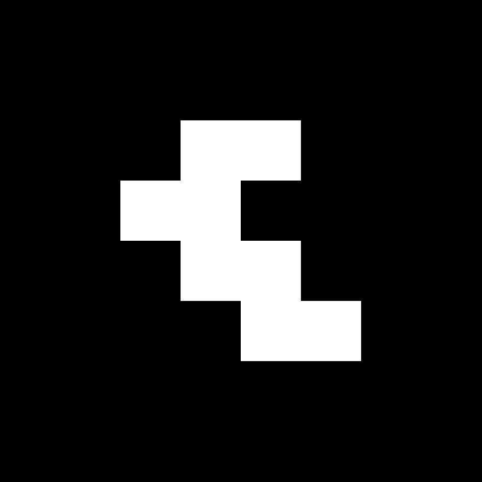
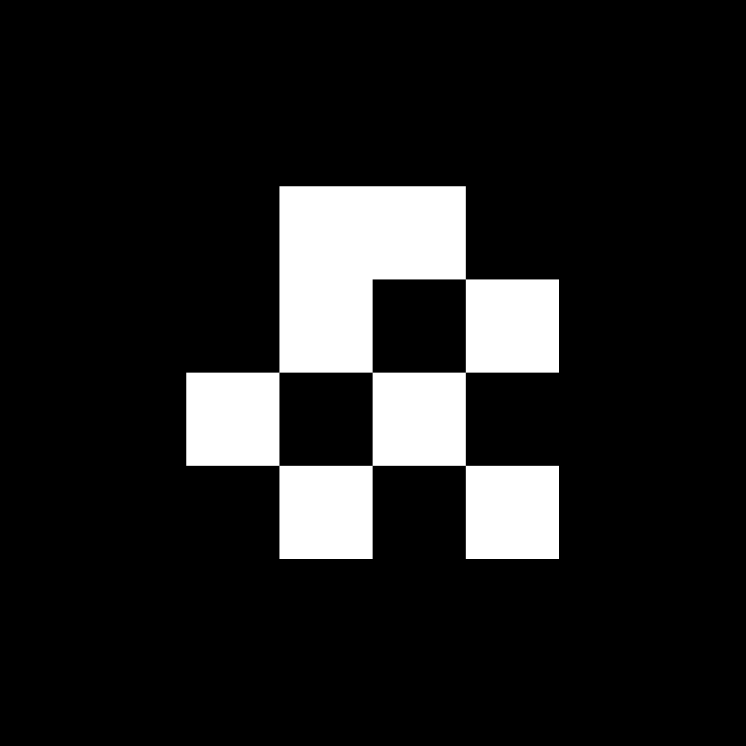
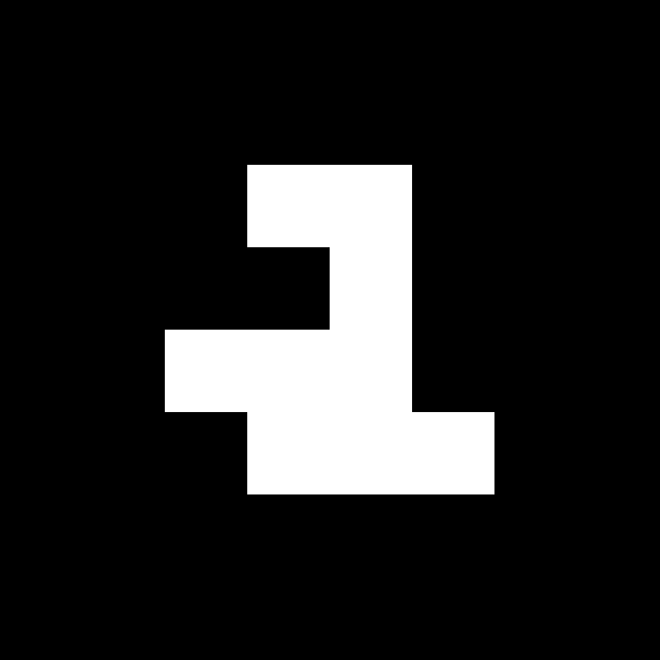

The Brass Compass
Marker 1 of 10
Print at actual size / 100% on US Letter paper. Do not select “fit to page.” Each black marker square is 4 × 4 inches. Keep all four edges visible; do not trim the black border.
Marker 1 of 10
Marker 2 of 10
Marker 3 of 10
Marker 4 of 10

Marker 5 of 10
Marker 6 of 10

Marker 7 of 10

Marker 8 of 10
Marker 9 of 10
Marker 10 of 10